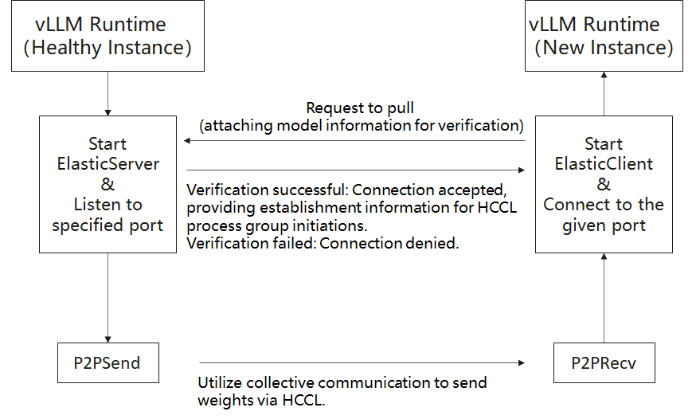
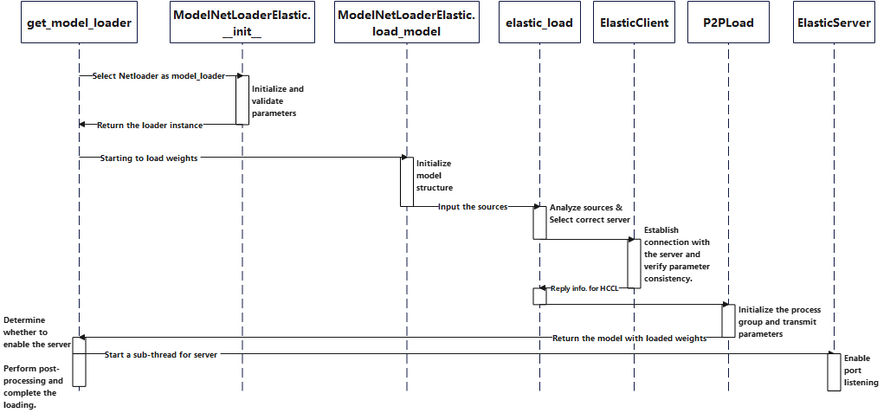

Netloader Guide
This guide provides instructions for using Netloader as a weight-loader plugin for acceleration in vLLM Ascend.
Overview
Netloader leverages high-bandwidth peer-to-peer (P2P) transfers between NPU cards to load model weights. It is implemented as a plugin (via the register_model_loader API added in vLLM 0.10). The workflow is:
A server preloads a model.
A new client instance requests weight transfer.
After validating that the model and partitioning match, the client uses HCCL collective communication (send/recv) to receive weights in the same order as stored in the model.
The server runs alongside normal inference tasks via sub-threads and via stateless_init_torch_distributed_process_group in vLLM. The client thus takes over weight initialization without needing to load from storage.
Flowchart

Timing Diagram

Application Scenarios
Reduce startup latency: By reusing already loaded weights and transferring them directly between NPU cards, Netloader cuts down model loading time versus conventional remote/local pull strategies.
Relieve network & storage load: Avoid repeated downloads of weight files from remote repositories, thus reducing pressure on central storage and network traffic.
Improve resource utilization & lower cost: Faster loading allows less reliance on standby compute nodes; resources can be scaled up/down more flexibly.
Enhance business continuity & high availability: In failure recovery, new instances can quickly take over without long downtime, improving system reliability and user experience.
Usage
To enable Netloader, pass --load-format=netloader and provide configuration via --model-loader-extra-config (as a JSON string). Below are the supported configuration fields:
Field Name |
Type |
Description |
Allowed Values / Notes |
|---|---|---|---|
SOURCE |
List |
Weight data sources. Each item is a map with |
A list of objects with keys |
MODEL |
String |
The model name, used to verify consistency between client and server. |
Defaults to the |
LISTEN_PORT |
Integer |
Base port for the server listener. |
The actual port = |
INT8_CACHE |
String |
Behavior for handling int8 parameters in quantized models. |
One of |
INT8_CACHE_NAME |
List |
Names of parameters to which |
Default: |
OUTPUT_PREFIX |
String |
Prefix for writing per-rank listener address/port files in server mode. |
If set, each rank writes to |
CONFIG_FILE |
String |
Path to a JSON file specifying the above configuration. |
If provided, the SOURCE inside this file has first priority (overrides SOURCE in other configs). |
Example Commands & Placeholders
Replace parts in
`<...>`before running.
Server
VLLM_SLEEP_WHEN_IDLE=1 vllm serve `<model_file>` \
--tensor-parallel-size 1 \
--served-model-name `<model_name>` \
--enforce-eager \
--port `<port>` \
--load-format netloader
Client
export NETLOADER_CONFIG='{"SOURCE":[{"device_id":0, "sources": ["`<server_IP>`:`<server_Port>`"]}]}'
VLLM_SLEEP_WHEN_IDLE=1 ASCEND_RT_VISIBLE_DEVICES=`<device_id_diff_from_server>` \
vllm serve `<model_file>` \
--tensor-parallel-size 1 \
--served-model-name `<model_name>` \
--enforce-eager \
--port `<client_port>` \
--load-format netloader \
--model-loader-extra-config="${NETLOADER_CONFIG}"
Placeholder Descriptions
<model_file>: Path to the model file<model_name>: Model name (must match between server & client)<port>: Base listening port on server<server_IP>+<server_Port>: IP and port of the Netloader server (from server log)<device_id_diff_from_server>: Client device ID (must differ from server’s)<client_port>: Port on which client listens
After startup, you can test consistency by issuing inference requests with temperature = 0 and comparing outputs.
Note & Caveats
If Netloader is used, each worker process must bind a listening port. That port may be user-specified or assigned randomly. If user-specified, ensure it is available.
Netloader requires extra on-chip memory memory to establish HCCL connections (i.e.
HCCL_BUFFERSIZE, default ~200 MB). Users should reserve sufficient capacity (e.g. via--gpu-memory-utilization).It is recommended to set
VLLM_SLEEP_WHEN_IDLE=1to mitigate unstable or slow connections/transmissions. Related info: vLLM Issue #16660, vLLM PR #16226.